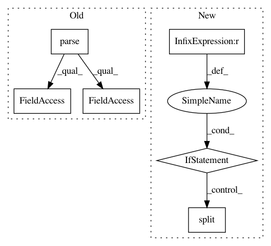

4e144c9f842d7415d8be5bdbb5912d88ae32cced,pycorrector/seq2seq/corpus_reader.py,CGEDReader,read_tokens,#CGEDReader#Any#Any#,96
Before Change
def read_tokens(self, path, is_infer=False):
with open(path, "r", encoding="utf-8") as f:
dom_tree = minidom.parse(f)
docs = dom_tree.documentElement.getElementsByTagName("DOC")
for doc in docs:
if is_infer:
// Input the error text
sentence = doc.getElementsByTagName("TEXT")[0]. \
childNodes[0].data.strip()
else:
// Input the correct text
sentence = doc.getElementsByTagName("CORRECTION")[0]. \
childNodes[0].data.strip()
yield segment(sentence, cut_type="char")
After Change
for line in f:
// Input the correct text, which start with 0
if i % 2 == 1:
if line and len(line) > 5:
yield line.lower()[5:].strip().split()
i += 1
In pattern: SUPERPATTERN
Frequency: 3
Non-data size: 6
Instances
Project Name: shibing624/pycorrector
Commit Name: 4e144c9f842d7415d8be5bdbb5912d88ae32cced
Time: 2018-04-16
Author: 507153809@qq.com
File Name: pycorrector/seq2seq/corpus_reader.py
Class Name: CGEDReader
Method Name: read_tokens
Project Name: shibing624/pycorrector
Commit Name: 4e144c9f842d7415d8be5bdbb5912d88ae32cced
Time: 2018-04-16
Author: 507153809@qq.com
File Name: pycorrector/seq2seq/corpus_reader.py
Class Name: CGEDReader
Method Name: read_samples_by_string
Project Name: scikit-image/scikit-image
Commit Name: 4fdfdc0c0c649b828857db13822894ecfc15361a
Time: 2018-11-03
Author: mark.harfouche@gmail.com
File Name: tools/build_versions.py
Class Name:
Method Name: main